전자기사 (2013-03-10 기출문제)
1과목: 전기자기학
1. ∇⋅i =0에 대한 설명이 아닌 것은?
- 도체 내에 흐르는 전류는 연속이다.
- 도체 내에 흐르는 전류는 일정하다.
- 단위시간당 전하의 변화가 없다.
- 도체 내에 전류가 흐르지 않는다.
(정답률: 알수없음)

2. 1[kV]로 충전된 어떤 콘덴서의 정전에너지가 1[J]일 때, 이 콘덴서의 크기는 몇 [μF]인가?
- 2[μF]
- 4[μF]
- 6[μF]
- 8[μF]
(정답률: 50%)
3. 진공 중에 선전하 밀도 +λ[C/m]의 무한장 직선전하 A와 -λ[C/m]의 무한장 직선전하 B가 d[m]의 거리에 평행으로 놓여 있을 때, A에서 거리 d/3[m]되는 점의 전계의 크기는 몇 [V/m]인가?
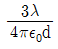
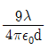
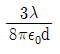
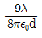
(정답률: 46%)
4. 정전용량 C[F]인 평행판 공기콘덴서에 전극간격의1/2 두께인 유리판을 전극에 평행하게 넣으면 이때의 정전용량은 몇 [F]인가? (단, 유리의 비유전률은 εs라 한다.)
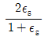
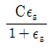
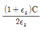
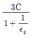
(정답률: 36%)
5. 자성체 경계면에 전류가 없을 때의 경계조건으로 틀린 것은?
- 전속밀도 D의 법선성분
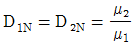
- 자속밀도 B의 법선성분 B1N=B2N
- 자계 H의 접선성분 H1T=H2T
- 경계면에서의 자력선의 굴절
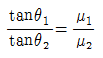
(정답률: 알수없음)
6. 그림과 같이 단면적이 균일한 환상철심에 권수 N1인 A코일과 권수 N2인 B코일이 있을 때 A코일 자기인덕턴스가 L1[H]라면 두 코일의 상호인덕턴스 M은 몇 [H]인가? (단, 누설자속은 0이라고 한다.)
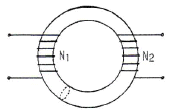
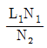
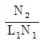
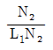
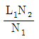
(정답률: 55%)
7. 자기유도계수 L의 계산방법이 아닌 것은? (단, N: 권수, ø : 자속, I : 전류, A : 벡터포텐샬, i : 전류밀도, B : 자속밀도, H : 자계의 세기이다.)
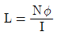
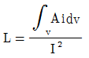
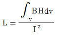
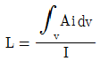
(정답률: 0%)
8. 압전기 현상에서 분극이 응력에 수직한 방향으로 발생하는 현상은?
- 종효과
- 횡효과
- 역효과
- 직접효과
(정답률: 10%)
9. 다음 중 스토크스(stokes)의 정리는?
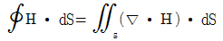
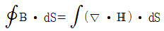
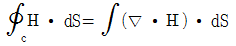
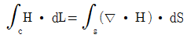
(정답률: 36%)
10. 전위가 VA인 A점에서 Q[C]의 전하를 전계와 반대 방향으로 ℓ[m]이동시킨 점 P의 전위[V]는? (단, 전계 E는 일정하다고 가정한다.)
- VP=VA-Eℓ
- VP=VA+Eℓ
- VP=VA-EQ
- VP=VA+EQ
(정답률: 50%)
11. 그림과 같은 공심 토로이드 코일의 권선수를 N배하면 인덕턴스는 몇 배 되는가?
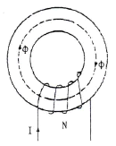
- N-2
- N-1
- N
- N2
(정답률: 30%)
12. 그림과 같은 모양의 자화곡선을 나타내는 자성체 막대를 충분히 강한 평등자계 중에서 매분 3000회 회전시킬 때 자성체는 단위체적당 매초 약 몇 [kcal]의 열이 발생하는가? (단, Br=2[Wb/m2], HL=500[AT/m], B=μH에서 μ는 일정하지 않음)
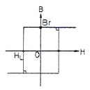
- 11.7
- 47.6
- 70.2
- 200
(정답률: 알수없음)
13. 환상 철심에 감은 코일에 5[A]의 전류를 흘려 2000[AT]의 기자력을 생기게 하려면 코일의 권수(회)는 얼마로 하여야 하는가?
- 10000
- 500
- 400
- 250
(정답률: 46%)
14. 전기쌍극자에 의한 전계의 세기는 쌍극자로부터의 거리 r에 대해서 어떠한가?
- r에 반비례한다.
- r2에 반비례한다.
- r3에 반비례한다.
- r4에 반비례한다.
(정답률: 20%)
15. Z축의 정방향(+방향)으로 10πaz[A]가 흐를 때 이 전류로부터 5[m] 지점에 발생되는 자계의 세기 H[A/m]는?
- H=-ax
- H=aø
- H=1/2aø
- H=-aø
(정답률: 알수없음)
16. 전위함수가 V=2x+5yz+3일 때, 점(2,1,0)에서의 전계의 세기는?
- -2i-5i-3k
- i+2j+3k
- -2i-5k
- 4i+3k
(정답률: 37%)
17. 반지름 2[mm]의 두 개의 무한히 긴 원통 도체가 중심 간격 2[m]로 진공 중에 평행하게 놓여있을 때 1[km]당의 정전용량은 약 몇 [μF]인가?
- 1×10-3[μF]
- 2×10-3[μF]
- 4×10-3[μF]
- 6×10-3[μF]
(정답률: 36%)
18. 그림과 같은 전기 쌍극자에서 P점의 전계의 세기는 몇 [V/m]인가?
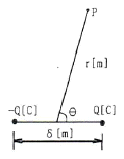
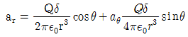
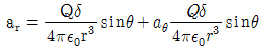
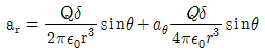
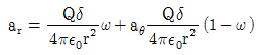
(정답률: 알수없음)
19. 단면적 1000[mm2] 길이 600[mm]인 강자성체의 철심에 자속밀도 B=1[Wb/m2]를 만들려고 한다. 이 철심에 코일을 감아 전류를 공급하였을 때 발생되는 기자력[AT]은? 문제 오류로 실제 시험에서는 모두 정답처리 되었습니다. 여기서는 가번을 누르면 정답 처리 됩니다.)
- 6×10-4
- 6×10-3
- 6×10-2
- 6×10-1
(정답률: 55%)
20. 다음 중 금속에서의 침투깊이(Skin Depth)에 대한 설명으로 옳은 것은?
- 같은 금속을 사용할 경우 전자파의 주파수를 증가시키면 침투깊이가 증가한다.
- 같은 주파수의 전자파를 사용할 경우 전도율이 높은 금속을 사용하면 침투깊이가 감소한다.
- 같은 주파수의 전자파를 사용할 경우 투자율 값이 작은 금속을 사용하면 침투깊이가 감소한다.
- 같은 금속을 사용할 경우 어떤 전자파를 사용하더라도 침투깊이는 변하지 않는다.
(정답률: 43%)
2과목: 회로이론
21. 그림과 같은 단일 구형파의 라플라스 변환은?
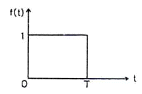
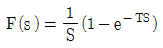
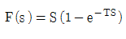
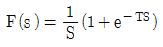
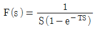
(정답률: 알수없음)
22. RLC 병렬회로가 공진주파수보다 큰 주파수 영역에서 동작할 때, 이 회로는?
- 유도성 회로가 된다.
- 용량성 회로가 된다.
- 저항성 회로가 된다.
- 탱크 회로가 된다.
(정답률: 50%)
23. 기본파의 50[%]인 제3고조파와 30[%]인 제5고조파를 포함하는 전압파의 왜형률은 약 얼마인가?
- 0.2
- 0.4
- 0.6
- 0.8
(정답률: 17%)
24. 다음 회로가 주파수에 무관한 정저항 회로가 되기 위한 R의 값은?
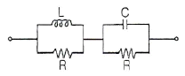
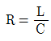
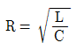
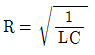
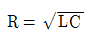
(정답률: 57%)
25. 임의의 회로 실효 전력이 30[W]이고, 무효전력이 40[VAR]일 때 역률은?
- 0.6
- 0.8
- 1.0
- 1.2
(정답률: 40%)
26. 4단자망의 파라미터에 대한 다음 설명 중 옳지 않은 것은?
- h 파라미터에서 h12와 h21는 차원(단위)이 없다.
- ABCD 파라미터에서 A와 D는 차원(단위)이 없다.
- h 파라미터에서 h11은 임피던스의 차원(단위)을, h22는 어드미턴스의 차원(단위)을 갖는다.
- ABCD 파라미터에서 B는 어드미턴스의 차원(단위)을, C는 임피던스의 차원(단위)을 갖는다.
(정답률: 알수없음)
27. 단위 임펄스의 라플라스 변환은?
- 1
- 1/S
- S
- 1/S2
(정답률: 20%)
28. R-L-C 직렬회로가 유도성 회로일 때의 설명이 옳은 것은?
- 전류는 전압보다 뒤진다.
- 전류는 전압보다 앞선다.
- 전류와 전압은 동위상이다.
- 공진이 되어 지속적으로 발진한다.
(정답률: 30%)
29. 공급 전압이 50[V]이고, 회로에 전류가 15[A]가 흐른다고 할 때 이 회로의 유효전력은 몇 [W]인가? (단, 전압과 전류의 위상차는 30°이다.)
- 125√3
- 245√3
- 375√3
- 750√3
(정답률: 43%)
30. 선형시변 인덕터의 자속이 ø(t)=L(t)i(t) 일 때, 전압 V(t)는?
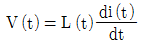
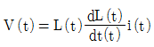
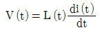
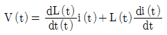
(정답률: 10%)
31. 다음 회로망은 T형 회로 및 π형 회로의 종속 접속으로 이루어졌다. 이 회로망의 ABCD parameter 중 옳지 않은 것은?
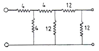
- A=7
- B=48
- C=6
- D=7
(정답률: 40%)
32. 다음 중 파형의 대칭성에 해당되지 않는 것은?
- 우함수
- 기함수
- 반파 대칭
- 고조파 대칭
(정답률: 19%)
33. 전송손실의 단위 1[neper]는 몇 데시벨(dB) 인가?
- 1.414
- 1.732
- 5.677
- 8.686
(정답률: 31%)
34. 시정수 τ를 갖는 R-L 직렬 회로에 직류 전압을 인가할 때 t=3τ가 되는 시간에 회로에 흐르는 전류는 최종값의 몇 [%]가 되는가?
- 86[%]
- 73[%]
- 95[%]
- 100[%]
(정답률: 36%)
35. K의 적분요소를 갖는 회로의 전달함수는?
- K
- 2K
- K/s
- K/2s
(정답률: 알수없음)
36. 10[V]의 기전력으로 300[C]의 전기량이 이동할 때 몇 [J]의 일을 하게 되는가?
- 1000[J]
- 2000[J]
- 3000[J]
- 4000[J]
(정답률: 54%)
37. 이상변압기에서 두 코일의 권선비는?
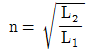
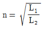
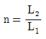
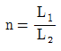
(정답률: 알수없음)
38. 두 코일간의 유도 결합의 정도를 나타내는 결합계수 K에 대한 설명으로 옳지 않은 것은?
- K=1은 상호 자속이 전혀 없는 경우이다.
- K=0은 유도 결합이 전혀 없는 경우이다.
- K=1은 누설 자속이 전형 없는 경우이다.
- 결합계수 K는 0과 1 사이의 값을 갖는다.
(정답률: 알수없음)
39. ABCD 파라미터에서 단락 역방향 전달 임피던스는?
- A
- B
- C
- D
(정답률: 17%)
40. RLC 직렬 공진회로에서 선택도 Q를 표시하는 식은? (단, wr은 공진 각 주파수이다.)
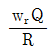
(정답률: 30%)
3과목: 전자회로
41. 어떤 증폭기에 그림(a)와 같은 파형이 인가되었을 때 그림(b)와 같은 출력파형이 발생되었다면 이 증폭기는?
- 고주파특성은 좋으나 저주파특성이 좋지 않다.
- 고주파특성, 저주파특성이 모두 좋지 않다.
- 저주파특성은 좋으나 고주파특성이 좋지 않다.
- 고주파특성, 저주파특성이 모두 좋다.
(정답률: 알수없음)
42. 수정발진자의 등가용량은 Co, 고유주파수는 fs이며, 발진자의 극간의 정전용량은 C, 정전용량을 고려한 주파수를 fP 라 할 때, 다음 관계식 중 옳은 것은?
(정답률: 30%)
43. 어떤 차동증폭기의 동상신호제거비(CMRR)가 80[dB]이고 차동이득(Ad)이 1000일 때 동상이득(Ac)은?
- 0.1
- 1
- 10
- 12.5
(정답률: 30%)
44. B급 푸시풀 증폭회로의 특성에 대한 설명 중 옳지 않은 것은?
- 컬렉터 손실을 2개로 분산할 수 있으므로 큰 출력을 얻을 수 있다.
- 전원 효율이 좋다.
- 입력이 가해지지 않을 때 전력손실이 극히 적다.
- 크로스오버 찌그러짐이 전혀 생기지 않는다.
(정답률: 47%)
45. 다음 회로에서 저항 Re의 역할로 가장 적합한 것은? (단, Ce의 용량은 무한대이다.)
- 출력증대
- 주파수 대역증대
- 바이어스 전압감소
- 동작점의 안정화
(정답률: 55%)
46. 부궤환(negative feedback)을 걸지 않은 경우 증폭기의 전압증폭도 A=1000배이다. β=0.⑤의 부궤환을 걸면 전압증폭도 Af는 약 얼마인가?
- 500
- 200
- 20
- 50
(정답률: 20%)
47. 다음 회로도는 어떤 동작을 하는 회로인가?
- 비동기식 2진 카운터
- 동기식 10진 카운터
- 링 카운터
- 존슨 카운터
(정답률: 19%)
48. 수정발진자의 직렬 공진주파수를 fs, 병렬 공진주파수를 fp라고 할 때, 안정된 발진을 지속할 수 있는 발진주파수 fo의 범위는?
- fo < fs
- fo > fp
- fp < fo < fs
- fs < fo < fp
(정답률: 10%)
49. 그림과 같은 전력증폭기의 최대 효율은 약 얼마인가?
- 12.5[%]
- 25[%]
- 50[%]
- 78.5[%]
(정답률: 알수없음)
50. 다음 그림은 터널 다이오드(Tunnel Diode) 전압전류 특성곡선이다. 발진이 일어날 수 있는 영역은?
- A
- B
- C
- D
(정답률: 20%)
51. 다음 그림의 연산증폭 회로에서 전압이득 AV는?
- -3
- 2
- 3
- 0.5
(정답률: 30%)
52. 피변조파 전압 V(t)가 100(1+0.8cos2000t)sin106t[V]로 표시될 때 하측파의 최대 진폭은?
- 40[V]
- 56.6[V]
- 80[V]
- 113.1[V]
(정답률: 0%)
53. 디지털 신호(2진 데이터)의 정보 내용에 따라서 반송파의 주파수를 변화시키는 것은?
- ASK
- FSK
- PSK
- DPSK
(정답률: 38%)
54. 연산 증폭기에서 입력 오프셋 전압이란?
- 출력전압이 ∞가 되게 하기 위한 입력단자 사이의 전압
- 출력전압이 ∞가 될 때 입력단자의 최대 전류
- 증폭기의 평형을 유지하기 위한 입력단자 사이에 공급하여야 할 전압
- 출력전압과 입력전압이 같게 될 때 증폭기의 입력전압
(정답률: 알수없음)
55. T형 플립플롭을 사용하여 4단 계수기를 만들면 몇 개의 펄스까지 계수할 수 있는가?
- 8개
- 16개
- 32개
- 64개
(정답률: 37%)
56. 다음 그림과 같이 연산증폭기를 이용하여 적분기 회로를 구성하는데 가장 알맞은 것은?
(정답률: 36%)
57. 비안정 멀티바이브레이터 회로에서 베이스 전압의 파형은?
- 구형파
- 정현파
- 삼각파
- 스텝파
(정답률: 알수없음)
58. RL=16[Ω], VCC=30[V]인 B급 전력증폭기에 20[V]의 신호를 공급할 때 입력전력 Pi(dc), 출력전력 Po(ac) 및 효율 η는 약 얼마인가?
- Pi(dc)=12.5[W], Po(ac))=23.9[W], η=42.3[%]
- Pi(dc)=23.9[W], Po(ac)=12.5[W], η=42.3[%]
- Pi(dc)=23.9[W], Po(ac)=12.5[W], η=52.3[%]
- Pi(dc)=12.5[W], Po(ac))=23.9[W], η=52.3[%]
(정답률: 19%)
59. 연산 증폭기에 대한 설명 중 옳지 않은 것은?
- 출력의 일부를 반전입력으로 되돌려서 출력전압을 감소시키는 것을 부궤환이라 한다.
- 출력의 일부를 비반전입력으로 되돌려서 출력전압을 증가시키는 것을 정궤환이라 한다.
- 개별소자 증폭기로는 이루기 힘든 이상적인 증폭기에 가까운 조건을 갖추도록 다수의 개별소자들의 집적화로 이루어진 증폭기이다.
- 매우 낮은 입력 임피던스와 매우 높은 출력 임피던스를 가지도록 설계되었다.
(정답률: 46%)
60. 동기 3단 2진 카운터를 JK F/F 3개와 어떤 게이트 1개를 사용하면 설계할 수 있는가?
- AND
- OR
- NOT
- EX-OR
(정답률: 알수없음)
4과목: 물리전자공학
61. 다음 원소 중 P형 반도체를 만드는 불순물이 아닌 것은?
- 인듐(In)
- 안티몬(Sb)
- 붕소(B)
- 알루미늄(Al)
(정답률: 40%)
62. 확산 현상에 대한 설명 중 옳은 것은?
- 캐리어 농도가 큰 쪽에서 작은 쪽으로 이동한다.
- 온도가 높을수록 충돌 빈도가 커지므로 확산이 어렵다.
- 열평형이란 전자의 드리프트와 정공의 드리프트 전류가 동시에 발생하는 경우이다.
- 충돌빈도가 클수록 평균 자유 행정과 평균 속도가 작아져서 확산이 쉽다.
(정답률: 42%)
63. 서미스터(thermistor) 용도로 옳지 않은 것은?
- 트랜지스터 회로의 온도 보상
- 마이크로파 전력 측정
- 온도 검출
- 발진기
(정답률: 20%)
64. 반도체에 관한 내용으로 잘못 짝지워 놓은 것은?
- 홀발진기 - 자기 효과
- 열전대 - 지벡 효과
- 전자냉각 - 펠티어 효과
- 광전도 셀 - 외부 광전 효과
(정답률: 알수없음)
65. 일정한 온도에서 n형 반도체의 도너 불순물 밀도를 증가시키면 페르미 준위는?
- 충만대 쪽으로 접근한다.
- 전도대 쪽으로 접근한다.
- 금지대 쪽으로 접근한다.
- 가전자대 쪽으로 접근한다.
(정답률: 25%)
66. 금속 표면에서 전자를 끌어내는 방향으로 전계를 가하면 금속표면의 전위장벽이 낮아진다. 이와 같은 효과는?
- 홀 효과
- 펠티어 효과
- 지벡 효과
- 쇼트키 효과
(정답률: 20%)
67. pn 접합에 역바이어스 전압을 걸어주면 어떠한 현상이 일어나는가?
- 이온화가 증가한다.
- 접합면의 정전용량이 증가된다.
- 접합면의 장벽전위가 낮아진다.
- 접합면의 공간 전하용량이 증가한다.
(정답률: 10%)
68. 컬렉터 접합부의 온도 상승으로 트랜지스터가 파괴되는 현상은?
- saturation 현상
- break down 현상
- thermal runaway 현상
- pinch off 현상
(정답률: 25%)
69. 300[K]에서 P형 반도체의 억셉터 준위가 32[%]가 채워져 있을 때 페르미 준위와 억셉터 준위의 차이는 몇 [eV]인가?
- 0.02
- 0.08
- 0.2
- 0.8
(정답률: 17%)
70. 페르미 준위에 대한 설명으로 옳지 않은 것은?
- 전자의 존재 확률이 0[%]이다.
- 절대온도 0[K]에서 전자의 최대에너지가 된다.
- P형 반도체의 페르미 준위는 가전자대 가까이 위치한다.
- n형 반도체의 페르미 준위는 전도대 가까이 위치한다.
(정답률: 29%)
71. 쌍극성 접합 트랜지스터(BJT)의 순방향 전류전달비 αF가 0.98일 때 전류이득 βF는?
- 40
- 43
- 46
- 49
(정답률: 10%)
72. 열평형 상태에서 PN 접합 전류가 zero(dud)라는 의미는?
- 전위 장벽이 없어졌다는 것이다.
- 접합을 흐르는 다수 캐리어가 없다.
- 접합을 흐르는 소수 캐리어가 없다.
- 접합을 흐르는 소수 캐리어와 다수 캐리어가 같다.
(정답률: 42%)
73. 가전자대의 전자가 빛의 에너지를 흡수하여 전도대로 올라감으로써 한쌍의 자유 전자의 정공이 생성되는 현상은?
- 광도전 현상
- 내부 광전 효과
- 열생성
- 확산
(정답률: 24%)
74. 접합형 트랜지스터에서 스위칭 작업에 필요한 동작영역은?
- 포화 영역, 활성 영역
- 활성 영역, 차단 영역
- 포화 영역, 차단 영역
- 활성 영역, 역할성 영역
(정답률: 42%)
75. 일반적으로 순수(intrinsic) 반도체에서 온도의 상승으로 나타나는 현상에 대한 설명으로 옳은 것은?
- 반도체의 저항이 증가한다.
- 정공이 전도대로 이전한다.
- 원자의 에너지가 증가한다.
- 원자의 에너지가 감소한다.
(정답률: 34%)
76. 다음 중 광양자가 에너지와 운동량을 갖고 있음을 나타내는 것은?
- 홀 효과(Hole effect)
- 콤프턴 효과(Compton effect)
- 에디슨 효과(Edison effect)
- 광전 효과(Photo electric effect)
(정답률: 20%)
77. PN 접합에서 접촉전위차에 대한 설명 중 옳은 것은?
- 불순물 농도가 커지면 전위차는 작아진다.
- 진성캐리어는 농도가 낮을수록 전위차는 높아진다.
- 온도가 높아지면 전위차도 높아진다.
- 전계작용에 의해 발생한다.
(정답률: 알수없음)
78. 어떤 도선에 1[A]의 전류가 흐르고 있을 때 임의의 단면적을 1[s] 동안에 1[C]의 전하가 이동한다면 이 단면적을 통과하는 전자의 수는?
- 6.25×1018 [개]
- 12.5×1018 [개]
- 62.5×1018 [개]
- 18.75×1018 [개]
(정답률: 46%)
79. 어떤 금속의 전위장벽 높이(E0)가 13.47[eV]이고, 페르미에너지(Ef)가 8.95[eV]일 때, 이 금속의 일함수(Ew)는?
- 4.52[eV]
- 9.04[eV]
- 11.21[eV]
- 22.42[eV]
(정답률: 알수없음)
80. 초전도 현상에 관한 설명으로 옳은 것은?
- 물질의 격자 진동이 심하게 되어 파괴된다.
- 저항이 무한으로 커짐에 따라 전류가 흐르지 않는다.
- 저온에서 격자 진동이 저하하여 결국 저항이 0으로 된다.
- 전자의 이동도 μ가 전계강도 E의 평방근에 비례한다.
(정답률: 10%)
5과목: 전자계산기일반
81. 컴퓨터나 주변장치 사이에 데이터 전송을 수행할 때 I/O 준비나 완료 상태를 나타내는 신호가 필요한 비동기식 입출력 시스템에 널리 쓰이는 방식은?
- Polling
- interrupt
- Paging
- handshaking
(정답률: 47%)
82. 비주얼 베이직(Visual Basic) 기본 문법 설명 중 옳은 것은?
- 한 행에 복수의 문장을 쓸 수 없다.
- 변수명과 프로시저 명에는 한글을 사용할 수 없다.
- 대문자와 소문자를 구분하지 않는다.
- 컨트롤, 폼, 클래스 및 표준 모듈의 이름에는 한글을 사용할 수 있다.
(정답률: 25%)
83. 주소 공간이 20[bit]이고 각 주소당 저장되는 데이터의 크기가 8[bit]일 때 주기억 장치의 용량은?
- 1[Mbyte]
- 2[Mbyte]
- 3[Mbyte]
- 4[Mbyte]
(정답률: 알수없음)
84. 컴퓨터로 업무를 처리할 때 처리할 업무를 분석하여 최종결과가 나오기까지의 작업 절차를 지시하는 명령문의 집합체를 무엇이라고 하는가?
- 컴파일(Compile)
- 프로그램(Program)
- 알고리즘(algorithm)
- 프로그래머(Programmer)
(정답률: 39%)
85. MSB에 대한 설명으로 옳은 것은?
- 맨 왼쪽 비트(최상위 비트)
- 맨 오른쪽 비트(최하위 비트)
- 2진수의 보수
- 8진수의 보수
(정답률: 25%)
86. 다음 운영체제(OS)의 구성용소 중 제어 프로그램(Control program)에 포함되지 않는 것은?
- Data management program
- Job management program
- Supervisor program
- Service program
(정답률: 47%)
87. 객체지향 언어이고 웹상의 응용 프로그램에 알맞게 만들어진 언어는?
- 포트란(FORTRAM)
- C
- 자바(java)
- SQL
(정답률: 알수없음)
88. interrupt 중에서 타이머, 정전 등의 외부 신호에 의하여 발생되는 것은?
- I/O interrupt
- program interrupt
- external interrupt
- supervisor call interrupt
(정답률: 25%)
89. CPU의 내부구조를 나타내는 레지스터 중 메모리로부터 읽은 명령어를 보관하는 레지스터는?
- ALU(Arithmetic Logic Unit)
- IR(Instruction Register)
- PC(Program Counter)
- MAR(Memory Address Register)
(정답률: 알수없음)
90. push와 pop operation에 의해서만 접근 가능한 storage device는?
- MBR
- queue
- stack
- cache
(정답률: 알수없음)
91. 수치적 연산에 관한 설명 중 가장 옳은 것은?
- 산술적 시프트는 덧셈, 나눗셈에 보조역할을 담당한다.
- 고정소수점 연산에서 부호-절대치인 경우 음수의 표현이 간편하여 하드웨어적으로도 간편한 이점이 있다.
- 우측 시프트의 경우 최소 유효 비트가 1이면 범람이 생긴다.
- 정수 연산에서 1의 보수와 2의 보수 표현은 덧셈과 산술 시프트로 모든 연산이 가능하며, 특히 2의 보수방식이 좋다.
(정답률: 42%)
92. 컴퓨터의 클록 펄스 주기가 5[MHz]이고, 16비트 레지스터를 통해 데이터를 직렬 전송한다면, 순수 데이털의 비트 전송시간과 워드 전송시간은?
- 0.2[μs], 0.5[μs]
- 0.2[μs], 3.2[μs]
- 0.4[μs], 6.4[μs]
- 0.4[μs], 12.8[μs]
(정답률: 40%)
93. 부동 소수점(floating point) 표현방식에서 정규화하는 이유는?
- 숫자를 지수형으로 표시하기 위해서
- 유효숫자를 크게 하기 위해서
- 소수점을 없애기 위해서
- 정밀도를 낮추기 위해서
(정답률: 38%)
94. 주기억장치에서 캐시 메모리로 데이터를 전송하는 매핑 방법이 아닌 것은?
- 어소시어티브 매핑(Associative Mapping)
- 직접 매핑(Direct Mapping)
- 간접 매핑(Indirect Mapping)
- 세트-어소시어티브 매핑(Set-Associative Mapping)
(정답률: 20%)
95. 다음 중 DRAM의 특징이 아닌 것은?
- 휘발성 메모리이다.
- SRAM보다 액세스 속도가 빠르다.
- 집적 밀도가 SRAM보다 높다.
- 재충전 회로가 필요하다.
(정답률: 19%)
96. 2의 보수로 표현되는 수가 A, B 레지스터에 저장되어 있다. A ← A-B 연산을 수행한 후의 A 레지스터는?
- 00000012
- FFFFFF12
- 000000B0
- FFFFFFB0
(정답률: 9%)
97. RISC(Reduced Instruction Set Computer)와 CISC(Complex Instruction Set Computer)에 대한 설명 중 잘못된 것은?
- RISC는 실행 빈도가 적은 하드웨어를 제거하여 자원 이용률을 높이는 장점이 있다.
- RISC는 프로그램의 길이가 길어지므로 수행 속도가 느린 단점이 있다.
- CISC는 고급언어를 이용하여 알고리즘을 쉽게 표현할 수 있는 장점이 있다.
- CISC는 복잡한 명령어군을 제공하므로 컴퓨터 설계 및 구현시 많은 시간을 필요로 하는 단점이 있다.
(정답률: 19%)
98. 마이크로컴퓨터에서 isolated I/O 방식과 비교하여 memory-mapped I/O 방식의 특징으로 옳은 것은?
- 하드웨어가 복잡하다.
- 기억장치 명령과 입출력 명령을 구별하여 사용한다.
- 기억장치의 주소 공간이 줄어든다.
- 입출력 장치들의 주소 공간이 기억장치 주소 공간과 별도로 할당된다.
(정답률: 34%)
99. 다음 중 피연산자의 위치(기억장소)에 따라 명령어 형식을 분류할 때 instruction cycle time이 가장 짧은 것은?
- 레지스터-메모리 instruction
- AC instruction
- 스택 instruction
- 메모리-메모리 instruction
(정답률: 0%)
100. 다음 중 순차 논리회로가 아닌 것은?
- 전가산기(Full Adder)
- master-Slave 방식의 JK 플립플롭
- 8진 UP 카운터(Counter)
- 4비트 시프트 레지스터
(정답률: 30%)